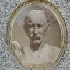

The Sullivan family was one of the easier ones for me to trace, as most of it was (a) already drawn out by previous genealogists and (b) a family of
English/Irish descent, meaning they have generally better records than my German branches. I could start centuries back in the Sullivan family if I wished, but to stick
with the purpose of this website, I will begin with David Ramsey Sullivan.
David was born July 27, 1817, in North Carolina. He married Martha E. Campbell (1829-1881) on September 17, 1843, in Hamilton County, IL. Together
they had ten children listed below. The couple both passed away within five days of each other: Martha died on March 4, 1881, in Macedonia, IL, at the age of 51, and
David died on March 8, 1881, at the age of 63. They were buried in Macedonia Cemetery.
Joel Joseph Morris Sullivan (1844-1917)
Joel was born November 25, 1844, in Illinois. He married Genneta A. Vise (1844-1922) on June 16, 1865, in Hamilton County. Together they had six children: Nancy
(Sullivan) Cullins (1866-1934), Herndon Sullivan (1868-1951), John Sullivan (1870-1901), Hosea Sullivan (1878-1957), Myra (Sullivan) Hungate (1880-1961), and Martha
Sullivan (1883 - aft. 1920). Joel passed away November 14, 1917, in Macedonia, at the age of 72. Genneta followed him in death four years later on January 29, 1922, in
Hamilton County, at the age of 77.
Mary E. (Sullivan) Gass (1846-1916)
Mary was born in November 1846 in Illinois. She married George Wilburn Gass (1844-1931) in 1863, a Union veteran in the American Civil War
and together they had two children I know of, David Gass (1865-1944)
and Lettie (Gass) Hutchcraft (1870-1924). Mary passed away in 1916 at the age of 69/70. George followed her in death 15 years later on March 20, 1931, in Ewing, IL, at
the age of 87. They were buried in Macedonia Cemetery.
Wallace Alexander Sullivan (1849-1871)
Wallace was born May 25, 1849, in Franklin County, IL. He passed away May 15, 1871, in Macedonia, IL, at the young age of 21.
Ellen M. (Sullivan) Taylor (1851-1899)
Ellen was born December 29, 1851, in Hamilton County. She married William Seborn "W.S." Taylor (1851 - ????). I do not know of any children. Ellen passed away on
April 6, 1899, in Illinois, and was buried in Antioch Cemetery in Hamilton County.
David Ramsey Sullivan, Jr. (1855-1920)
David was born August 19, 1855, in Macedonia. He married Cynthia Aseneth Boster (1857-1922) on June 6, 1875, in Hamilton County. Together they had five children:
Iris Sullivan (1879-????), Arthur Sullivan (1881-1954), Annice Sullivan (1883-1966), Martha Sullivan (1886-1963), and Orley Sullivan (1889-1959). David passed
away February 18, 1920, in Macedonia, at the age of 64. Cynthia followed him in death two years later on March 7, 1922, in Macedonia, at the age of 65. They were
buried in Macedonia Cemetery.
John Wesley Sullivan (1858-1943)

John was born January 22, 1858, in Hamilton County. He married Mary Elizabeth Kearney (1863-1943) on August 17, 1878, in Franklin County. Together they had ten
children: Henry Sullivan (1879 - Sep. 1879), William Sullivan (1880-1957), Charles Sullivan (1884-1967),
Lora Sullivan (1886-1969), James Sullivan (1889-1902), Alice Sullivan (1891-????), Alva Sullivan (1891-1949), Curtes Sullivan (1892-1907), Flora (Sullivan) Cutright
(1894-1981), and Fannie (Sullivan) Ehmke (1897-1979). John and Mary passed away one day from each other; Mary on December 28, 1943, in Benton, IL, at the age of 80, and
John December 29, 1943, in Benton, at the age of 85. They were buried in Macedonia Cemetery.
Thomas Marcus Sullivan (c. 1860 - 1874)
Thomas was born c. March 8, 1860, in Hamilton County. I know very little about him; he passed away October 12, 1874, in Macedonia, at the young age of around 14.
James Lewis Sullivan (c. 1863 - aft. 1880)
James was born c. 1863 in Hamilton County. I know little of him either; he died after 1880 (my last record of him is from the 1880 census).
Rosanah Sullivan (c. 1864 - 1874)
Rosanah was born c. May 8, 1864, in Illinois. She probably died alongside her older brother Thomas on October 12, 1874, at the young age of 10. She was buried in
Macedonia Cemetery.
Robert Henry Sullivan (1866-1942)
Robert was born March 5, 1866, in Macedonia. He married Cordelia Jane Hamilton (1866-1930) c. 1886 in Illinois. I do not know of any children. Cordelia passed
away September 1, 1930, in Macedonia, at the age of 64. Robert followed her in death on October 23, 1942, in Danville, IL, at the age of 76. They were buried in
Macedonia Cemetery.